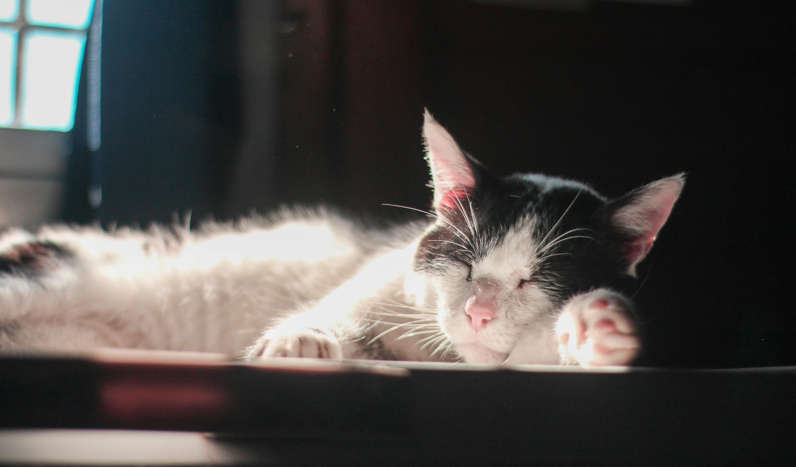

Mais Detalhes Sobre Nós
Bem-vindo ao nosso site de Veterinária e Adoção! Oferecemos uma variedade de serviços para garantir a saúde e bem-estar dos animais. Nosso Atendimento Veterinário Completo inclui consultas, exames e cirurgias realizados por veterinários qualificados.
Além disso, disponibilizamos Vacinas Gratuitas para gatos com até 2 anos de idade, assegurando que eles estejam saudáveis e protegidos. Também promovemos a Adoção Responsável, com um processo de triagem rigoroso para conectar animais abandonados a lares adequados.
Nosso compromisso se estende à Reabilitação de Animais, oferecendo cuidados personalizados para aqueles com necessidades especiais. Oferecemos ainda Educação, com workshops sobre cuidados e comportamento animal, e estabelecemos Parcerias de Verificação com organizações para garantir a saúde dos animais antes da adoção.
Para situações imprevistas, temos atendimentos de Emergências 24h, garantindo suporte veterinário a qualquer hora.
Estamos sempre em busca de profissionais apaixonados por animais para se juntarem à nossa equipe. Para mais informações, entre em contato conosco pelo email: contato@veterinariaadocao.com ou pelo telefone: 11 98372-0367. Siga-nos nas redes sociais!